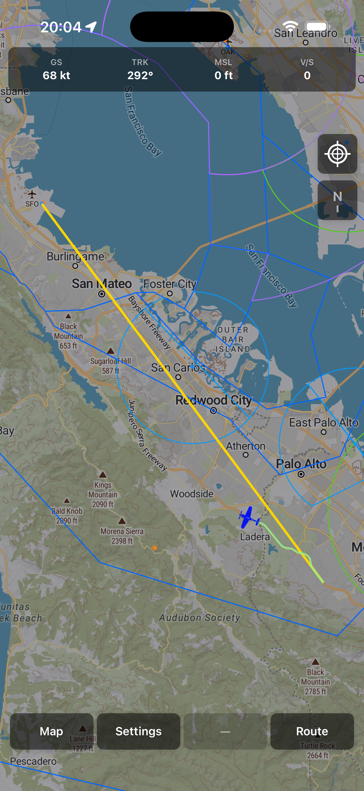
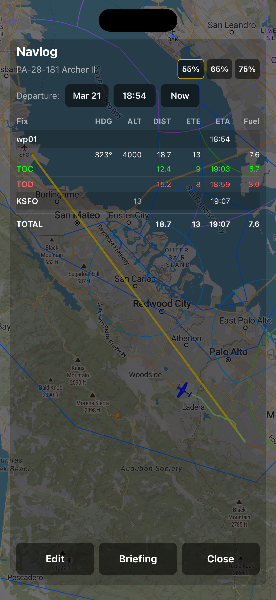
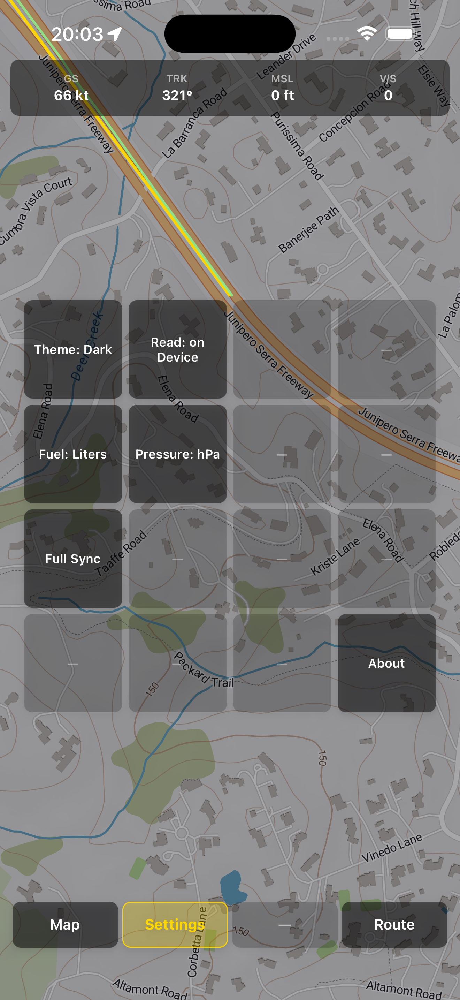

The Cockpit, Clarified.
VueloVista is a premier aviation mapping platform built for pilots who value speed, safety, and situational awareness. Designed to work as a seamless companion from pre-flight planning to active navigation, VueloVista ensures you have the data you need, exactly when you need it.
Key Features
- Intuitive Aviation Map: Explore a responsive, interactive map featuring global airspaces, airports, and navigation aids designed for instant readability.
- Cockpit-Ready Offline Mode: Download and sync critical flight data before you take off, ensuring full map functionality and reliability even without an internet connection at altitude.
- Live Flight Intelligence: Stay informed with real-time displays of your GPS position, ground speed, altitude, and climb rate.
- Heads-Up Navigation: Use the "follow-me" mode to keep your aircraft centered and oriented, reducing workload during busy flight phases.
- Flight Path Tracking: Visualize your active flight track to maintain superior awareness of your progress and surroundings.
- Professional Grade Reliability: Built with a focus on stability and performance to ensure the map remains fluid and responsive during critical maneuvers.


